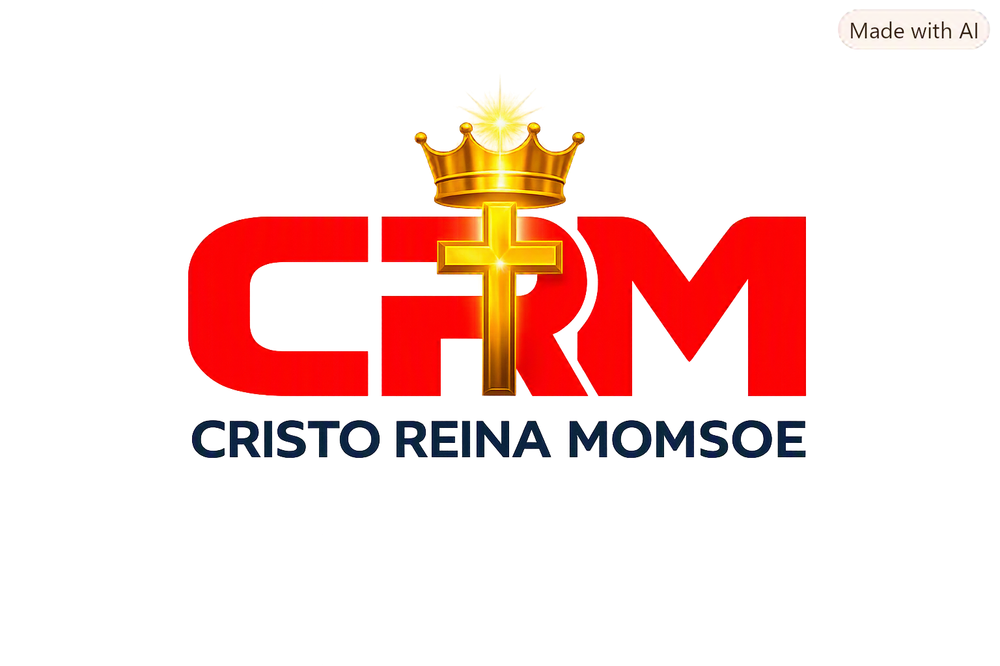
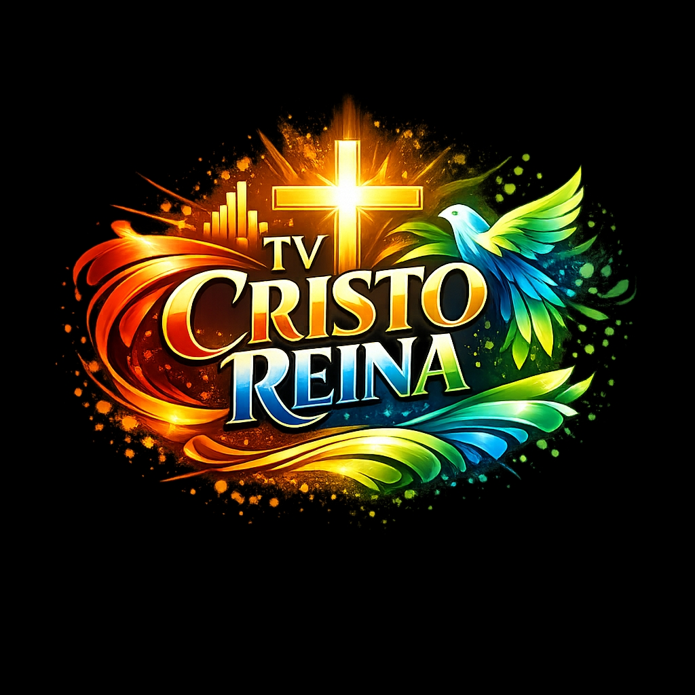

CRIA
Cristo Reina na Inteligência Artificial: frente de inovação e inteligência do Ecossistema.
Em evolução
Portal CRM ``` ```Ecossistema Cristo Reina MOMSOE
O Portal CRM apresenta e conecta as iniciativas do Ecossistema Cristo Reina MOMSOE, respeitando a identidade e a autonomia de cada projeto.
Conheça o EcossistemaInstitucional
Uma obra construída com fé, coragem e compromisso com o Reino de Deus. Honramos nossos fundamentos enquanto edificamos o futuro com responsabilidade e unidade.
Atuamos nas frentes espiritual, material e digital: formação e discipulado, apoio a comunidades e uma presença digital organizada para servir, comunicar e conectar.
Ecossistema
Cada projeto mantém sua independência operacional. O Portal CRM oferece contexto, descoberta e os futuros pontos de acesso oficiais.
Cristo Reina na Inteligência Artificial: frente de inovação e inteligência do Ecossistema.
Em evoluçãoAgenda Virtual Inteligente voltada à organização e conexão de informações.
Em evoluçãoConteúdo cristão para a família, com mensagens, reflexões e programação especial.
Conhecer a TVFrente editorial e de comunicação do Ecossistema.
Em evoluçãoServiços gráficos e comunicação visual para projetos, instituições e comunidades.
Em evoluçãoConteúdo

Louvores, mensagens bíblicas, reflexões, notícias gospel e programas especiais dedicados à edificação espiritual e à família.
Assistir no YouTubeServiços
Materiais para comunicação e apresentação institucional.
Soluções visuais alinhadas à identidade e ao propósito de cada iniciativa.
O Ecossistema está preparado para incorporar serviços futuros de forma organizada.
Aplicações
CRIA e Conecta News serão disponibilizados por seus próprios ambientes quando suas versões públicas forem definidas. Este Portal fará somente a conexão institucional e funcional adequada.
Contato
Os canais oficiais de contato serão publicados nesta área assim que forem definidos pelo Ecossistema.